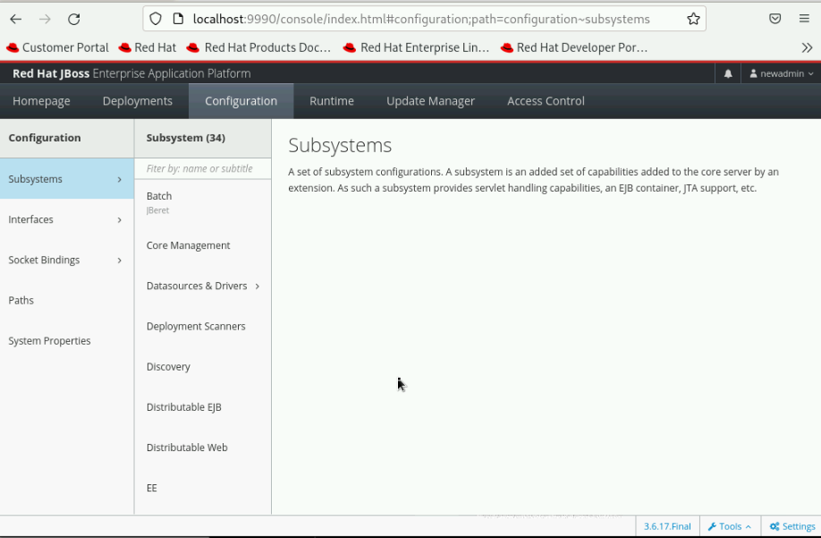
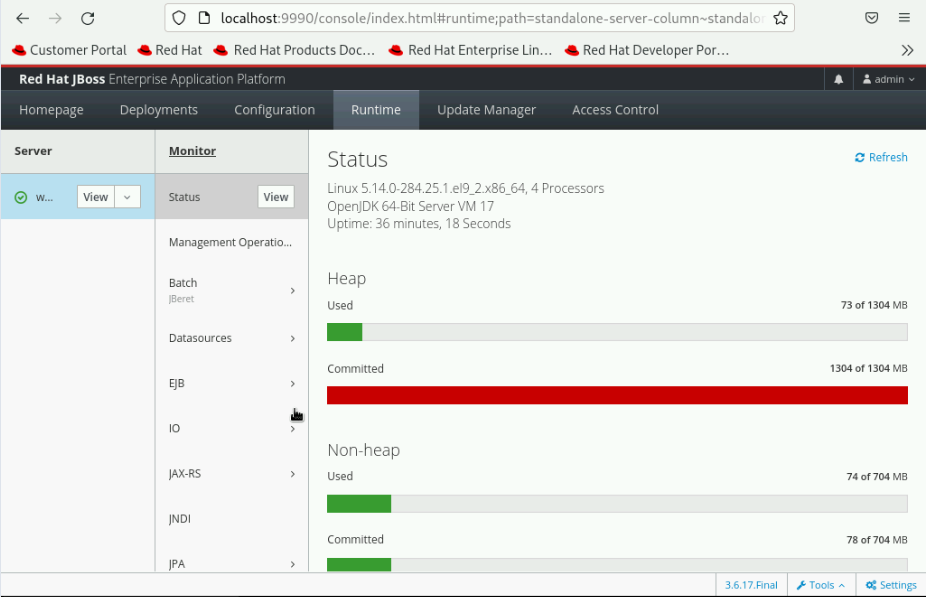
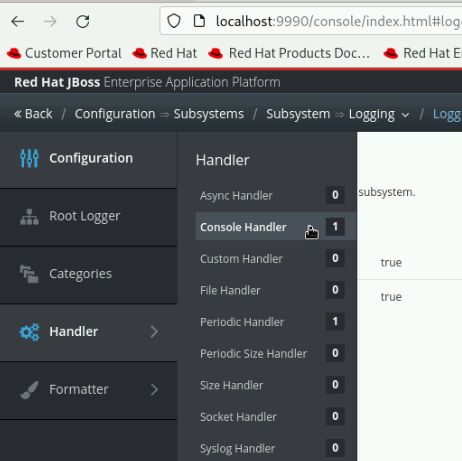
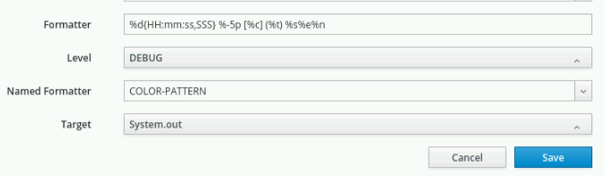

Interpreting Extensions, Subsystems, and Profiles
-
JBoss EAP 8.0 provides implementations of the Jakarta EE 10 APIs and Jakarta EE 10 Web Profile, Core Profile, and the Full Platform standards.
-
JBoss EAP 7.4, supported Jakarta EE 8. However, Jakarta EE 10 has undergone several changes, the most significant being the modification of the package namespace for Jakarta EE APIs from javax to jakarta.
-
See the complete list of specifications in the release notes.
Modules in JBoss EAP
-
JBoss EAP 8 is based on a core infrastructure provided by the WildFly 28 Core project that, manages the loading and activation of modules, following the architecture provided by the JBoss Modules project.
-
A module basically provides Java code to be used by JBoss EAP services and by applications.
-
The modules are located at the
JBOSS_HOME/modules/system/layers/base/directory.[vagrant@server ~]$ ls -l /opt/EAP-8.0.0/modules/system/layers/base/ total 16 drwxr-xr-x. 3 jboss jboss 17 Apr 9 04:13 asm drwxr-xr-x. 15 jboss jboss 4096 Apr 9 04:13 com drwxr-xr-x. 3 jboss jboss 20 Apr 9 04:13 gnu drwxr-xr-x. 3 jboss jboss 17 Apr 9 04:13 ibm drwxr-xr-x. 3 jboss jboss 19 Apr 9 04:13 internal drwxr-xr-x. 6 jboss jboss 68 Apr 9 04:13 io drwxr-xr-x. 23 jboss jboss 4096 Apr 9 04:13 jakarta drwxr-xr-x. 3 jboss jboss 17 Apr 9 04:13 javaee drwxr-xr-x. 29 jboss jboss 4096 Apr 9 04:13 javax drwxr-xr-x. 4 jboss jboss 35 Apr 9 04:13 net drwxr-xr-x. 29 jboss jboss 4096 Apr 9 04:13 org drwxr-xr-x. 4 jboss jboss 34 Apr 9 04:13 sun drwxr-xr-x. 3 jboss jboss 17 Apr 9 04:13 wildflyee
Extensions
-
A module that provides features and capabilities to the application server is called an extension.
-
An extension does not only provide code, but also provides a management model, which enables the extension to be configured by the core.
-
Extensions are added by using the <extension> element, at the beginning of the JBoss EAP main configuration file:
JBOSS_HOME/standalone/configuration/standalone.xmlorJBOSS_HOME/domain/configuration/domain.xml. -
These file defines multiple <extension> tags.
-
The general structure of
standalone.xmlordomain.xmlis similar to the following content:<server xmlns="urn:jboss:domain:16.0"> <extensions> ...list of extensions here </extensions> <system-properties> ...system properties defined here </system-properties> <management> ...management interfaces defined here </management> <profile> ...list of subsystems and their configurations </profile> <interfaces> ...interface definitions </interfaces> <socket-binding-group> ...socket binding definitions </socket-binding-group> <deployments> ...deployed applications go here </deployments> </server> -
For example, the following excerpt describes a list of extensions available to a server, including ejb3, which is responsible for providing the Enterprise Java Beans (EJB) runtime:
[vagrant@server ~]$ less /opt/EAP-8.0.0/standalone/configuration/standalone.xml <?xml version="1.0" encoding="UTF-8"?> <server xmlns="urn:jboss:domain:20.0"> ... <extensions> <!-- list all extensions that you want made available to this server --> <extension module="org.jboss.as.clustering.infinispan"/> <extension module="org.jboss.as.deployment-scanner"/> <extension module="org.jboss.as.ejb3"/> <extension module="org.jboss.as.jpa"/> </extensions> ... -
JBoss EAP uses the module name to find extension module. For example, to locate the
org.jboss.as.jpamodule, JBoss EAP searches for theorg/jboss/as/jpa/directory in theJBOSS_HOME/modulesdirectory. -
The JBoss EAP core loads and activates modules/extensions only when necessary, so that inactive features do not consume memory or CPU resources unnecessarily.
The Subsystems and Profiles
-
A profile is a collection of subsystems.
-
A subsystem is where you configure the extensions of the JBoss EAP instance.
-
JBoss EAP profiles are supposed to be customized to a particular application and environment needs, so two real-world standalone server instances probably have different profiles, containing different subsystem configurations.
-
Adding a subsystem to a profile has two purposes:
-
When the subsystem is inside a profile, then that subsystem is available to the server using that profile.
-
The subsystem enables to configure the extension to suit the user’s specific needs.
-
-
The <profile> element includes a collection of <subsystem> child elements, and each <subsystem> entry consists of the unique configuration settings of that particular extension.
-
The general structure of
profileandsubsystemis similar to the following content:<server xmlns="urn:jboss:domain:16.0"> <extensions> ...list of extensions here </extensions> .... <profile> <subsystem> ...list of subsystems and their configurations </subsystem> </profile> .... </server> -
Subsystems might include many configuration settings, such as the datasources subsystem. This subsystem configuration, in the default
standalone.xmlconfiguration file, looks like:<profile> <subsystem xmlns="urn:jboss:domain:datasources:6.0"> <datasources> <datasource jndi-name="java:jboss/datasources/ExampleDS" pool-name="ExampleDS" enabled="true" use-java-context="true" statistics-enabled="${wildfly.datasources.statistics-enabled:${wildfly.statistics-enabled:false}}"> <connection-url>jdbc:h2:mem:test;DB_CLOSE_DELAY=-1;DB_CLOSE_ON_EXIT=FALSE</connection-url> <driver>h2</driver> <security> <user-name>sa</user-name> <password>sa</password> </security> </datasource> <drivers> <driver name="h2" module="com.h2database.h2"> <xa-datasource-class>org.h2.jdbcx.JdbcDataSource</xa-datasource-class> </driver> </drivers> </datasources> </subsystem> </profile> -
Each subsystem has its own XML schema to define what is allowed within its <subsystem> element. All JBoss EAP 8 subsystem schema definitions can be found in the
JBOSS_HOME/docs/schemadirectory.[vagrant@server ~]$ ls -l /opt/EAP-8.0.0/docs/schema/ | head -10 total 23112 -rw-r--r--. 1 jboss jboss 866 Apr 9 04:14 README.md -rw-r--r--. 1 jboss jboss 12120 Apr 9 04:14 application-client_10.xsd -rw-r--r--. 1 jboss jboss 12174 Apr 9 04:14 application-client_6.xsd -rw-r--r--. 1 jboss jboss 13310 Apr 9 04:14 application-client_7.xsd -rw-r--r--. 1 jboss jboss 13092 Apr 9 04:14 application-client_8.xsd -rw-r--r--. 1 jboss jboss 12112 Apr 9 04:14 application-client_9.xsd -rw-r--r--. 1 jboss jboss 14802 Apr 9 04:14 application_10.xsd -rw-r--r--. 1 jboss jboss 9058 Apr 9 04:14 application_1_4.xsd -rw-r--r--. 1 jboss jboss 9803 Apr 9 04:14 application_5.xsd
-
Subsystems can be configured using Management Console or CLI, so there is no need to edit the XML directly to configure a subsystem. Below screenshot shows the subsystem configuration in Management Console.
 -
If a subsystem does not require any specific settings, an empty <subsystem> entry is still required in the configuration file. For example, the jaxrs subsystem is configured by default, without any specific settings:
<subsystem xmlns="urn:jboss:domain:jaxrs:1.0"/>
-
The JBoss EAP standalone server instance configuration file
standalone.xmlcontains a single, anonymous, profile definition. -
The
domain.xmlmanaged domain configuration file contains four pre-defined profiles by defauilt:-
default: Is the most commonly used subsystems, including logging, security, datasources, infinispan, weld, webservices, and ejb3. The default implements not only the Jakarta EE Web Profile, but also most of the Jakarta EE Full Profile.
-
ha: Contains the exact same subsystems as the default profile, with the addition of clustering capabilities, provided mainly by the jgroups subsystem.
-
full: Is similar to the default profile, but notably adds the messaging (messaging-activemq) and a few other less used subsystems.
-
full-ha: Is the same as the full profile, but with the addition of clustering capabilities.
-
-
Look in the
JBOSS_HOME/standalone/configurationdirectory. Notice there are four standalone configuration files:-
standalone.xml: Compares to the default profile in domain.xml.
-
standalone-ha.xml: Compares to the ha profile in domain.xml.
-
standalone-full.xml: Compares to the full profile in domain.xml.
-
standalone-full-ha.xml: Compares to the full-ha profile in domain.xml.
-
They are provided so a standalone server instance can easily be started with more or less subsystems available.
-
Start the JBoss EAP instance using the default
standalone.xmlto start most commonly used subsystems. To use a different configuration file, the--server-configor-cparameter can be used as follows:[vagrant@server bin]$ sudo -u jboss /bin/sh ./standalone.sh -c standalone.xml or [student@workstation ~]$ sudo -u jboss /bin/sh /opt/EAP-8.0.0/bin/standalone.sh --server-config standalone.xml
-
Start the JBoss EAP instance using the
standalone-ha.xmlto start clustering capabilities.[vagrant@server bin]$ sudo -u jboss /bin/sh ./standalone.sh -c standalone-ha.xml
-
Start the JBoss EAP instance using the
standalone-ha.xmlto start messaging-activemq capabilities.[vagrant@server bin]$ sudo -u jboss /bin/sh ./standalone.sh -c standalone-full.xml
-
Start the JBoss EAP instance using the
standalone-ha.xmlto start messaging-activemq and clustering capabilities.[vagrant@server bin]$ sudo -u jboss /bin/sh ./standalone.sh -c standalone-full-ha.xml
|
Be careful not to confuse a JBoss EAP profile with a Jakarta EE profile. A JBoss EAP profile is a collection of subsystem configurations that are used to define the capabilities and services of a JBoss EAP server instance. A Jakarta EE profile is a collection of Java EE standards. |
-
In a managed domain, the administrator can create new profiles, either from scratch, or cloned from the ones provided, and then customize the new profiles before associating them to their respective groups.
-
A profile can also be a child of another profile, thus inheriting the subsystem configuration from its parent profile, so common configurations can be shared and maintained in a single place.
Lab 1: Configuring Subsystems
Outcome: In this lab, you customize the subsystem of JBoss EAP 8 standalone server by updating the log level using management console.
-
Navigate to the JBoss_Home directory.
[vagrant@server ~]$ cd /opt/EAP-8.0.0/bin/ [vagrant@server bin]$
-
Start the JBoss EAP instance using the default
standalone.xmlto start most commonly used subsystems.[vagrant@server bin]$ sudo -u jboss /bin/sh ./standalone.sh -c standalone.xml
-
Then, navigate to the management console at
http://localhost:9990. Useadminas username andredhat123as password. -
Update the log level of the
CONSOLEhandler and set it toDEBUG.-
Click Configuration at the top of the management console. In the first column, click Subsystems and then in the second column click Logging. Click Configuration in the third column, and then View.
 -
Click Handler at the first column, and then click Console Handler to access the configuration page for the Console handler.
 -
Select the CONSOLE row in the table. Click Edit. Change the Level from INFO to DEBUG. Then click Save.

-
-
Observe the additional debug information provided by the server in the console that reflects the log level change made in the management console.
[vagrant@server bin]$ sudo -u jboss /bin/sh ./standalone.sh -c standalone.xml
...output omitted...08:40:19,689 DEBUG [org.jboss.as.config] (MSC service thread 1-3) VM Arguments: -D[Standalone] -Xlog:gc*:file=/opt/EAP-8.0.0/standalone/log/gc.log:time,uptimemillis:filecount=5,filesize=3M -Djdk.serialFilter=maxbytes=10485760;maxdepth=128;maxarray=100000;maxrefs=300000 -Xms1303m -Xmx1303m -XX:MetaspaceSize=96M -XX:MaxMetaspaceSize=256m -Djava.net.preferIPv4Stack=true -Djboss.modules.system.pkgs=org.jboss...output omitted...